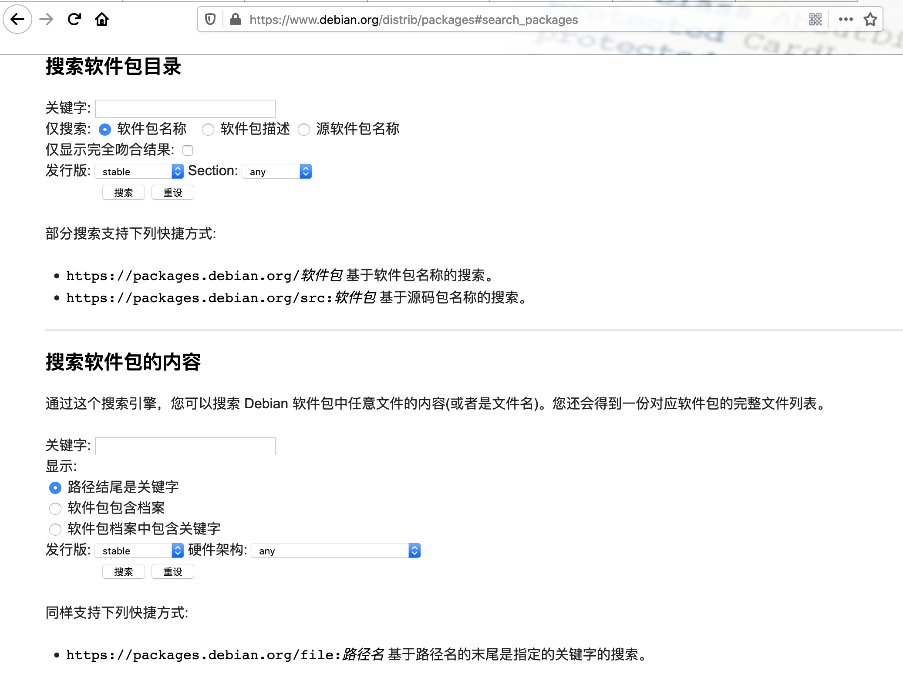
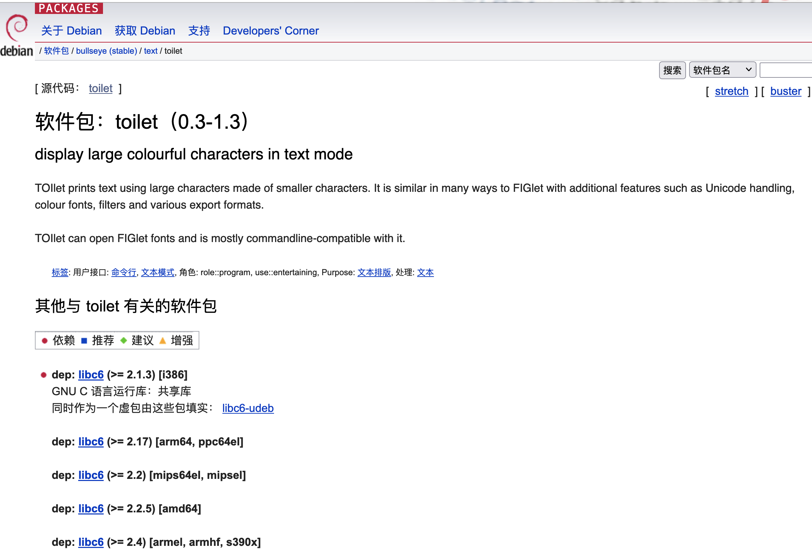
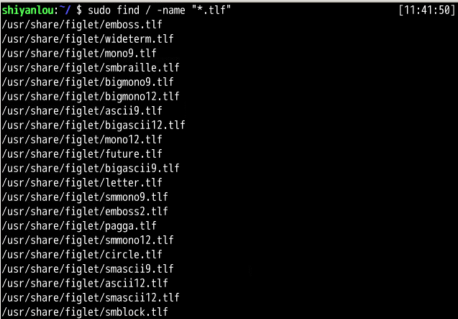
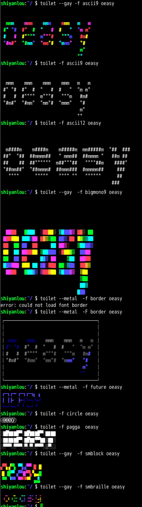
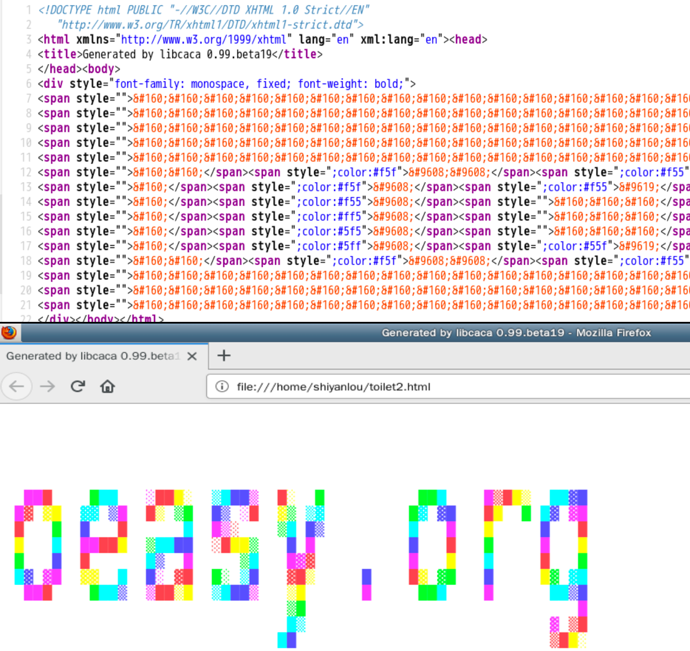

我们突然有了一个疑问
/color 一下接下来我们我们去另一个大字符工具那里玩一下...
apt search toilet
apt show toilet


sudo apt install toilet
toilet oeasy
/usr/share/figlet

echo -e "\e[01;32m$(toilet -f ascii9 "oeasy")\e[00m"
oeasy 是文字内容ascii9 是字体32m 是颜色30-37 范围内的颜色30 是黑色find /usr/share/figlet -name "*.tlf" -exec basename {} \; | sed -e "s/\..lf$//" | xargs -I{} toilet -f {} {}
#下面这句是把toilet结果输出到oeasy.html
toilet -f bigmono9 --gay --html "oeasy.org" >> oeasy.html
#后面这句是用火狐打开刚才生成的网页。
firefox oeasy.html
